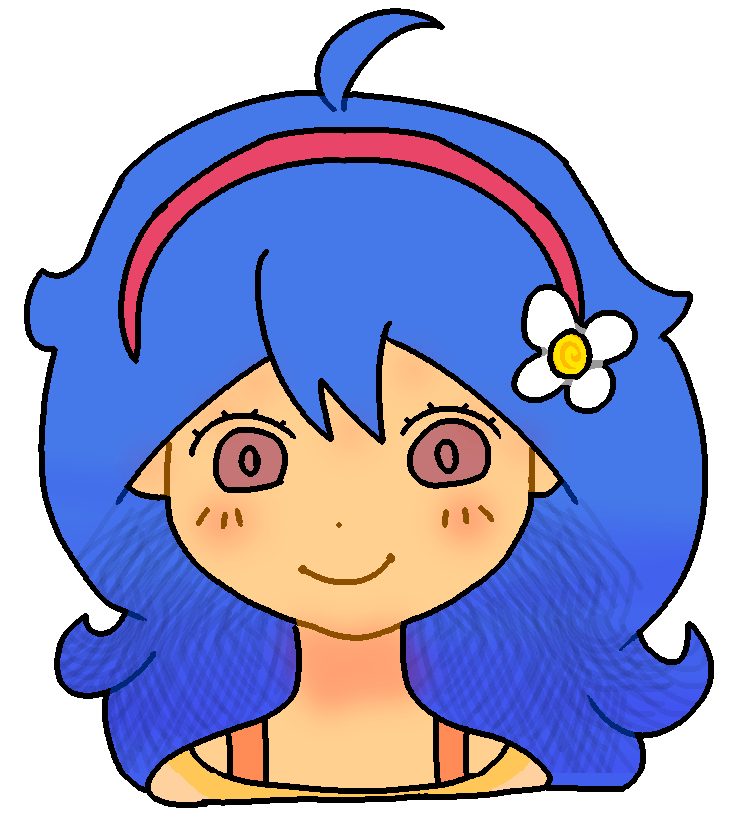

This is my personal place to save my drawings and practice programming, sit down and have fun!
En la escuela hablé con el vicerector el cual también es profesor de música, hablé de si podía usar su teclado para tocar mientras aprendía con tutoriales de YouTube, pero se ofrecio a darme talleres de piano, lo cual es una muy buena noticia, la verdad pensaba que diría que no.
No hubo clases porque llovió, pero por la tarde me invitaron a practicar para un oral de historia (hacer el PowerPoint) en la biblioteca, llegamos y estaba una ya esperando, luego llego otra, y otra, y fuimos a la biblioteca a estudiar, luego de estar un tiempo largo viendo quien hace cada cosa, empezamos a hacer el PowerPoint, cada uno su parte, mientras una hacia los demás estabamos dibujando y contando chistes, le regalé la pegatina de Miku que tenía dentro de mi teléfono a una de ellas, luego ella me dio una de el caballerito de Hollow Knight, luego otra me dio uno de gatito, los cuales puse en el lugar donde estaba Miku. Al salir fuimos un rato a la plaza junto a la escuela y tomamos algunos mates mientras contabamos más chistes, me hubiera quedado más tiempo, pero no aguantaba las ganas de ir al baño, por eso me tuve que ir, lo peor fue que les mentí y les dije que mi mamá me dijo que llegue antes de que oscurezca.
En la escuela hoy hicimos un juego de una hoja donde hay formas y otro donde dice que letra representa cada forma, debemos adivinar que dice la hoja, el que adivina primero gana más puntos (¡yo hice en primer lugar!) tampoco vinieron la profesora de Lengua y Literatura, y la de Biología asi que tengo horas libre.
En las primeras horas del dia me sentí algo triste recordando todas las cosas malas que hice y las cosas que no hice a lo largo de mi vida, algo normal ¿no? luego una persona me ayudó un poco y me dió algunos consejos.
En la escuela hoy hicimos un evento de escucha, donde hablábamos de nuestros problemas (pero yo no hice porque el profesor me seleccionó de escritor para escribir todo lo que decían tanto el como los demás) y yo no pude participar, justamente que yo tengo más problemas, pero por un lado mejor porque me da cosa hablar, aunque me hubiera gustado, fuera de eso no hicimos nada, ¡y nos dejaron salir antes!